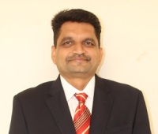

Department of Cse
This is link to the official website
NIRF Ranks for RCOEM :: 119 in 2021 | 113 in 2020 | 112 in 2019 | 101-150 in 2018 | 64 in 2017 | 86 in 2016
To continually improve the education environment,
in order to develop graduates with strong academic and
technical background needed to achieve distinction in
the discipline. The excellence is expected in various
domains like workforce, higher studies or lifelong learning.
To strengthen links between industry through partnership
and collaborative development works.
To develop strong foundation of theory and practices of computer science amongst the students to enable them to
develop into knowledgeable, responsible professionals,technologies for the betterment of the society.
The Department has good industry interaction with Software , Government organization and Private Sectors around the region.
The Memorandum of Understanding is signed for Student Projects,Faculty Trainings, and Research work. The industry offers
problem definitions to pre-final and final year students for projects along with guidance. The final outcome in most
of projects is integrated as part of product and utilized by industry.
The industry offers training in recent trend and technology in the form of Open Elective courses. The guest lectures
are organized by department by inviting industry experts in the areas of Mobility, Big Data, and Storage Management.
There is large employment potential for Computer Science & Engineering graduates in numerous sectors like Software Industries, IT Enabled
Service firms, Research Sector and Communication industry. CSE graduates are offered employment from companies, namely, Goldman Sachs, ZS
Associates, Amazon, Principal Global Services, Capgemini, LLC, Infosys, Informatica, VMware, BirlaSoft, TCS, Persistent Systems Ltd.,
BYJU's, Tata Consultancy Services, GlobalLogic India Pvt. Ltd., Infocepts, Accenture, L&T, Merkle Sokrati, Softlink International and
others with the average package being 4.81 lakhs. Dream companies like Goldman Sachs, Amazon and VMware offered compensation as high as 23
lakhs, 20 lakhs and 19.5 lakhs respectively. Graduates can seek opportunities to work in profiles like Software Developer, Application
Developer, Enterprise Architect, Data Analyst, Database Administrator, Client Server Systems Manager etc. in these firms.
| Under Graduate Programmes(UG) | Post Graduate Programmes(PG) |
|---|---|
| B.E Computer Science & Engineering | M.Tech.Computer Science & Engineering |
| B.E Computer Science & Engineering(Artificial Intelligience & Machine Learning) | |
| B.E Computer Science & Engineering(Data Science) | |
| B.E Computer Science & Engineering(Cyber Security) |

For more information :
Number:9175925595
Email:my@gmail.com